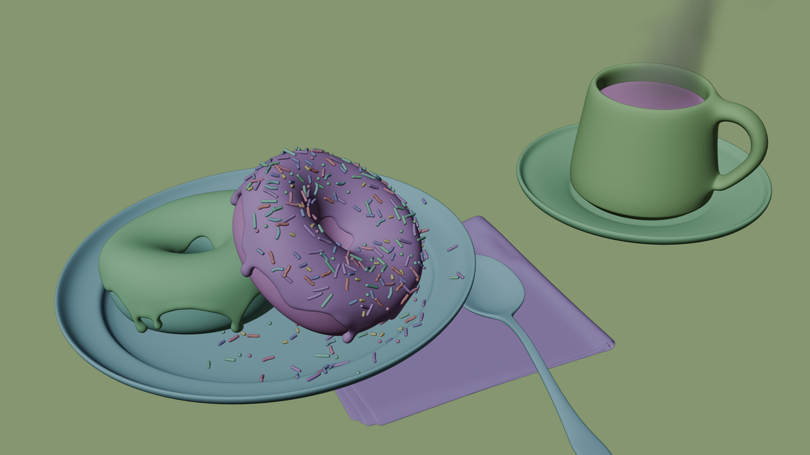
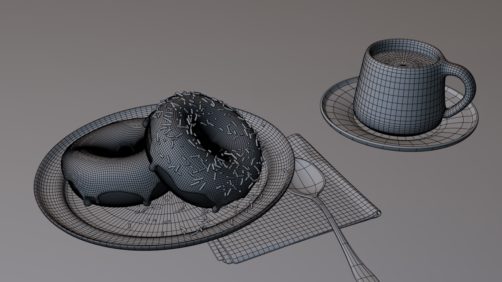

Pause Café
Avril 2026
Blender




Contexte :
J’ai choisi de suivre le célèbre tutoriel du donut, avec l'objectif d'approfondir mes connaissances du workflow de Blender, tout en ajoutant une touche personnelle.
Réalisation :
Ce travail de plusieurs jours m'a confronté à des défis techniques stimulants, surmontés à l'aide de la communauté Discord.
Le plus gros défi a été d’ajouter une serviette à la scène : j’ai commencé par la modéliser à la main, mais je me suis tourné
vers une simulation physique pour un meilleur rendu et un pliage naturel. Lors de la simulation, elle se contractait sur
elle-même à cause de l'échelle trop réduite de la scène. J'ai dû l’agrandir pour réaliser la simulation et le bake, puis
la réduire à sa taille initiale.
Conclusion :
Ce projet m'a permis d'explorer tout le pipeline : modélisation, sculpting, shading, UV editing, physique, et même animation pour la serviette et le café.
J’en suis fier et cela me donne hâte de continuer.